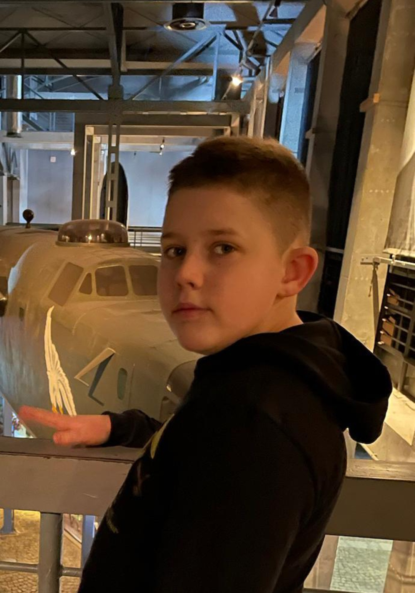
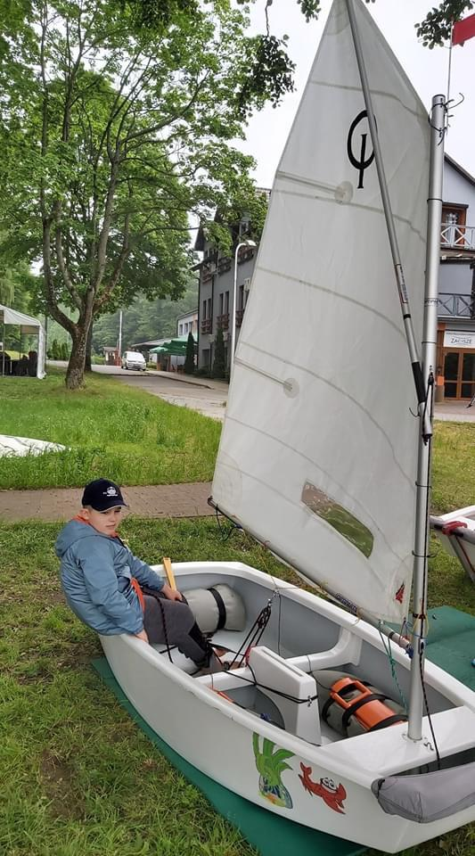
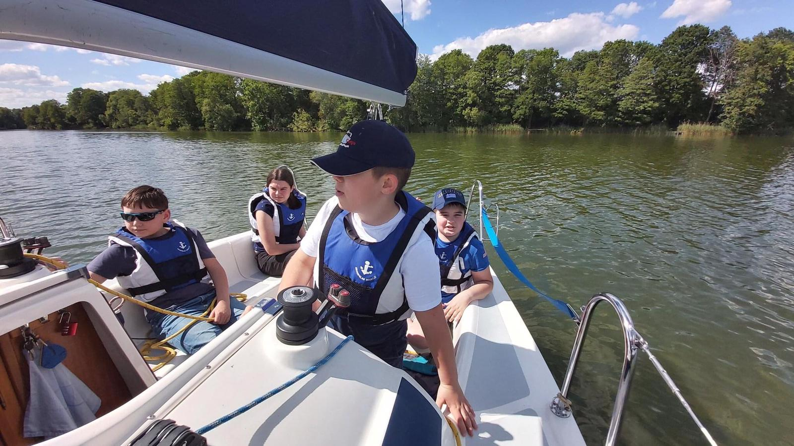
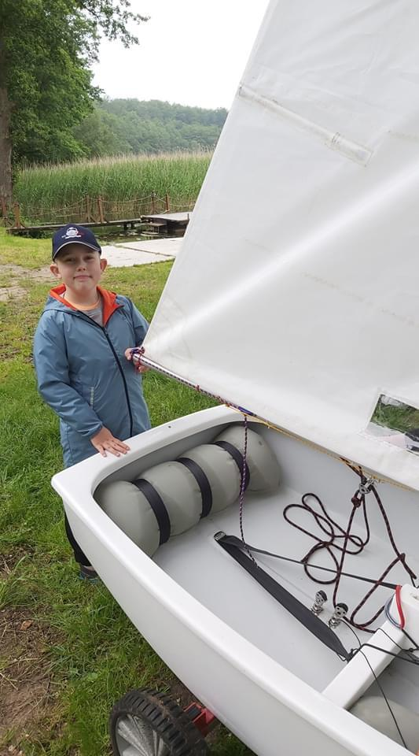
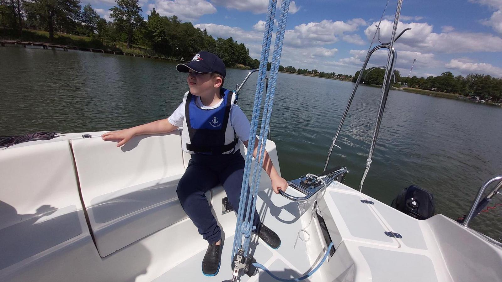

O mnie
Antoni Kołodziejczyk - urodzony w 2010 roku pasjonat:
Astronomii, Astronautyki, Fizyki, Chemii, Matematyki,
Informatyki, Żeglarstwa oraz Militariów.
Uczęszcza do 8 klasy w SP1 Złotów. Jest tam (niezbyt) pilnym uczniem.
Aktualnie uczy się gry na gitarze i programowania.





Powrót